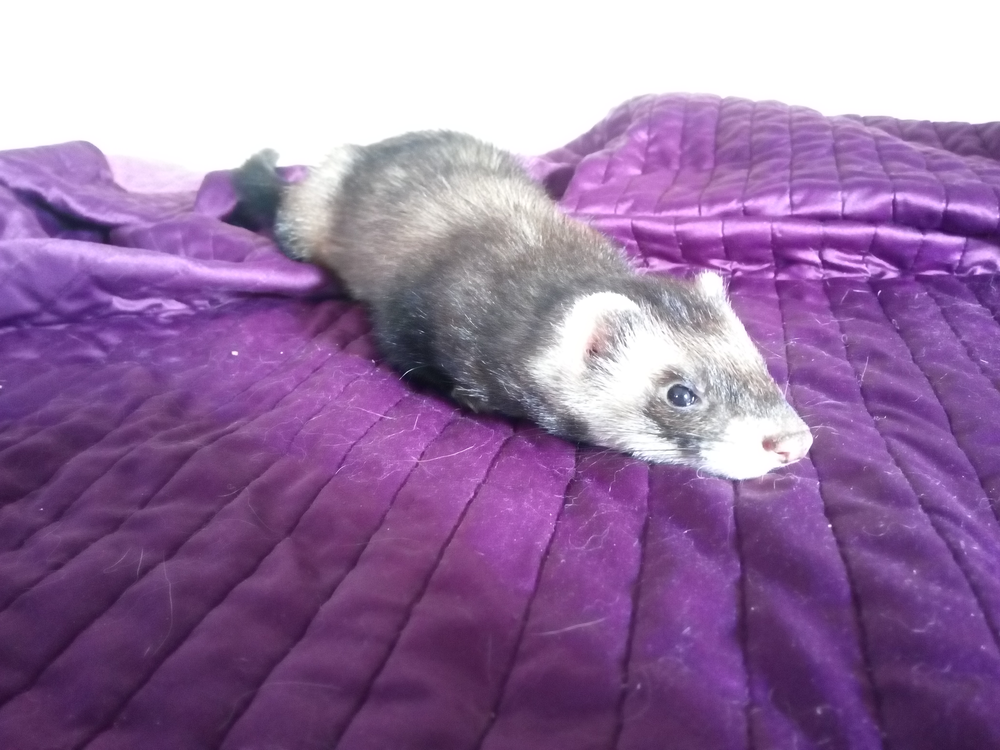
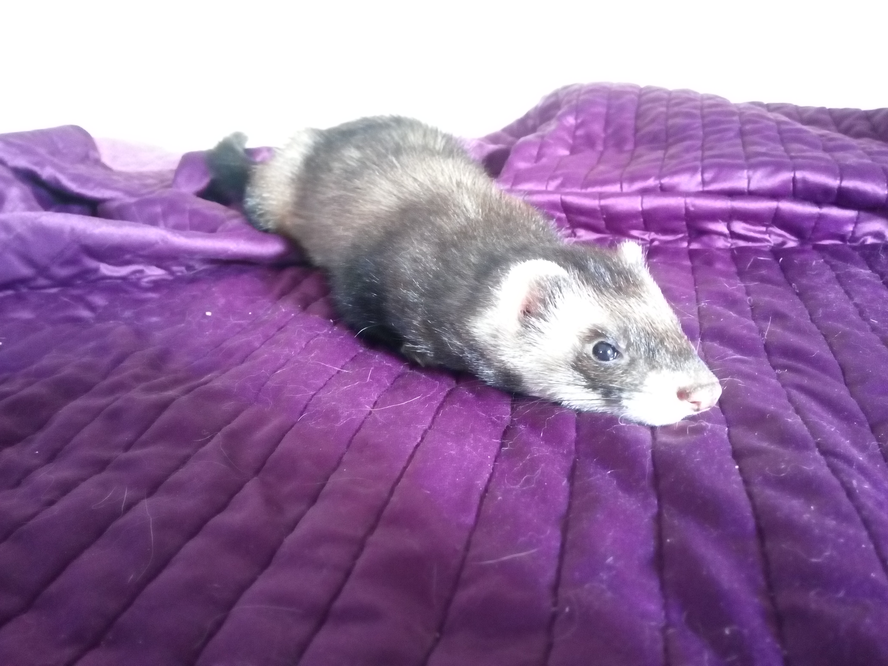

Bienvenue !
Bonjour de la part de toute l'équipe ainsi que de tous nos poutpouteurs!
Vous êtes actuellement sur le site officiel du refuge des mustélidés ou plutôt des furets.
Ici vous trouverez des images ainsi que des histoires marrantes de nos petits poilu!
Si vous souhaitez apporter votre aide à nos furets, cliquez-ici
- Léon BloyLes animaux sont entre nos mains le gage du paradis perdu
 
